This document lays out how the temporal closure algorithm of SputLink can be implemented in Python. The old version of SputLink is implemented in Perl and has two main problems: (i) it does not integrate optimally with the Tarsqi toolkit and (ii) it cannot be easily optimized for speed. A Python version is easier to integrate in the Tarsqi Toolit and makes it possible to achieve serious processing speed gains by using c extensions. The design is informed by but not directly based on the Perl version. This second version was written because the closure composnent has become more and more of a drag on the processing speed. This is partly the result of the success of other components. Especially Blinker now creates many more tlinks than previsouly, which this slows down temporal closure and makes the need for optimization more urgent. This specification document has more details on optimizations than the previous one.
The code should run on Python 2.3 on the major operating systems (Linux, Unix, OSX, Windows) and no extra installs should be needed. However, C extensions needed for serious optimization are allowed. The code should be able to run as a stanalone application but it should be easy to integrate it into the Tarsqi toolkit.
Here is the required functionality:
SputLink is to be as independent from the Tarsqi Toolkit as possible. For example, the graph is separate from the TimeML files or objects it was created from, that is, if links are added in the graph, links are not automatically added to the TimeML file or the list of TimeML objects. The only module from the Tarsqi Tookit that SputLink can use is the XML parser.
The main class is called
Although this is the main class, most of the real work is forwarded to the graph object and many tasks of ConstraintPropagator are mostly of a bookkeeping nature:
ConstraintPropagator has the following instance variables (listed with the types of their values):
ConstraintPropagator — instance variables filename None or the name of the file that was loaded graph a Graph pending a queue of constraints that are not yet added to the graph compositions a CompositionTable (which contains the compositions of all pairs of constraints) intersections a table with intersections of relation sets, see the section on optimizations for more details
A ConstraintPropagator can be initialized from a TimeML file or
from a list of objects (events, timexes and links). In the first case,
the initialization method will use the Tarsqi toolkit
module
At initialization, the composition table is read from a file. The composition table is implemented as an instance of CompositionTable and it contains the compositions for all pairs of the 28 convex relations, that is, there are 784 cells. Of those, only 638 cells contain non-trivial relations (that is, not a disjunction of all relations). In addition, all events and timexes are added to the graph as Nodes (this is hidden from the ConstraintPropagator, it simply hands the XmlDocElements to the graph), and the links are put on the pending queue as instances of Constraint.
ConstraintPropagator — methods __init__() Sets the graph to an empty graph and the pending queue to an empty queue. reset() Empties the graph and the queue, but leaves the composition and intersection tables as they are. setup(comp_file, tml_file) Reads the compositions table and exports the compositions to the graph. Also reads the TimeML file, sending the events, instances and timexes to the graph, and using the tlinks to build the pending queue. _read_file(filename) Opens the file and creates an XmlDocument object, using docmodel.xml_parser. Then hands the objects in the file to _load_objects(). and TLINK tags from the XmlDocument and use them to propulate the graph and queue instance variables. _load_objects(
events, instances,
times, tlinks)Populates graph and queue directly from the lists given. The elements on the lists are all XmlDocElements. The events, instances and times are forwarded to the graph instance variable, the tlinks are put on the pending queue as instance of Constraint.
Note that in this table, like the other method tables, does not list all methods, but just the ones that are either public methods or methods that implement an important part of the functionality. Private methods start with a single underscore. The self argument is never listed.
Constraint propagation is controlled by the add_constraints() and add_constraint() methods. Constraints from the pending queue are added to the graph one by one and each time the graph is asked to propagate the constraint. When the graph initializes itself, it creates edges between all pairs of nodes. For each edge, the constraint is the disjunction of all Allen relations, which we implement as the absence of a constraint. In the course of the whole procedure, constraints can become more and more specific.
ConstraintPropagator — methods add_constraints(force=True) All constraints are added to the graph one by one. If an inconsistency arises, the method will terminate and return False if force=False. If force=True (the default), then the method will not terminate but simply continue adding constraints from the pending list, but warnings will be printed for each constraint that failed to be succesfully added and inconsistence reports are available on request). This method repeatedly calls add_constraint(). add_contraint() The first constraint is popped off the pending queue and then handed over to the graph, calling the propagate() method on the graph. The graph propagates the constraint and returns True if propagation was succesful and False if it wasn't. In the latter case, the graph can be asked what the source of the inconsistency was. reduce() Reduces a closed graph to the minimal graph that is semantically equivalent.
When constraints are added using add_constraints(), it is assumed that the constraints on the queue are sorted. It is also assumed that add_constraints() does not need to filter out constraints, for example those with a low confidence score. These kinds of functionalities are taken care of outside of SputLink. The calling module can retrieve the pending queue, somehow change it, and then set the pending queue:
cp = ConstraintPropagator()
cp.setup('compositions_file', 'some_file.tml')
constraints = cp.pending
constraints = filter_and_sort(constraints)
cp.pending = constraints
A final responsibility of the ConstraintPropagator is to translate between various types of relations. This task is actually delegated to a special mappings module. Translating Allen relations back into TimeML relations is perhaps something that requires a Constraint to check its history. An Allen equal can be translated into TimeML's identity, if the equals is derived from two equals that were in fact identities. This should be recursive.
R(i,j) - a constraint on the temporal relation between nodes i and j, that is, a disjunction of Allen relations between the two nodes; this notation is for a constraint that was not yet added to the graph
ER(i,j) - a constraint expressed on edge E between nodes i and j
ToDo - a queue of constraints not yet incoporated in the graph, that is, constraints of the form R(i,j)
With these definitions we can present the algorithm in pseudo code as follows:
1. Propagate( R(i,j) ): 2. add R(i,j) to ToDo 3. while ToDo is not empty do 4. R(i,j) := get next constraint from ToDo 5. ER(i,j) := R(i,j) 6. foreach node k do 7. Combine( ER(k,j) , Compose(ER(k,i),R(i,j)) ) 8. Combine( ER(i,k) , Compose(R(i,j),ER(j,k)) ) 9. 10. Combine( ER(i,j), R(i,j) ): 11. R'(i,j) := ER(i,j) INTERSECT R(i,j) 12. if R'(i,j) is empty then 13. raise InconsistencyError 14. elsif R'(i,j) SUBSET_OF ER(i,j) then 15. add R'(i,j) to ToDo
The Propagate() function takes a new constraint R(i,j), adds it to the graph, and computes the propagation of the new constraint through the graph. To that end, it initializes the ToDo queue by putting R(i,j) on it as its sole element. Then, while ToDo is not empty, constraints of the form R(i,j) are popped of the queue and added to the graph by setting ER(i,j), the constraint on the edge between i and j, to R(i,j). Then, the algorithm takes all nodes k that have outgoing edges leading into i or incoming edges coming out of j (note that this restriction is not printed in line 6, it just takes all k):
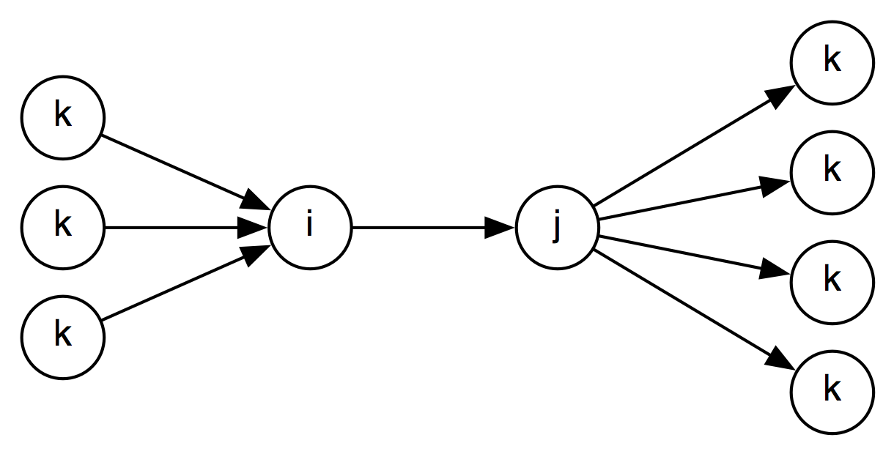
For all these nodes, the algorithm looks up the composition of ER(k,i) and R(i,j)) as well as the composition of R(i,j) and ER(j,k), using the Compose() function. The Combine() function then takes the composition results and combines them with the existing constraints ER(k,j) and ER(i,k) respectively (see lines 7 and 8). Combine() intersects the constraint already existing on the edge with the constraint proposed by composition of two other edges, creating R'(i,j). The workings of Combine() as called in line 7 is illustrated in the figure below.
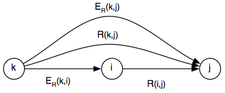
Here, R(k,j) is derived by composing the constraints between k and i with the constraint between i and j. It is then compared with the constraint already expressed on the edge between k and j, that is, ER(k,j). If R(k,j) is a subset of ER(k,j), then the newly generated constraint is more specific than what already exists on the graph and R(k,j) is added to the ToDo queue.
An empty intersection indicates an inconsistency, which is always
reported by the graph. In addition, the graph has to restore
consistency by backtraking to the previous consistent state. To that
end, it uses an instance variable named
But the backtracking described above is only needed if a graph can be in an inconsistent state. Suppose we have the following three constraints in the graph: c_i(e1,e2,<), c_j(e2,e3,<), and c_k(e1,e3,>). Then, we can derive from c_i and c_j that c_k must be <, but it is already set to >. In that case we need to remove either the new constraint plus the facts it was derived from or the old one (including its ancestors), which may be a bit more complicated than the backtracking mechanism outlined above. Such an inconsistency however can never occur with the current approach where the graph is always consistent and all inconsistencies are caught when adding new constraints to the graph using propagate().
A graph has the following instance variables:
Graph — instance variables cycle an integer queue a queue of Constraints nodes a hash of Nodes, indexed on node identifiers (eiid or tid) edges a two-dimensional array of Edges, indexed on node identifiers compositions a CompositionTable, the same as the one on ConstraintPropagator intersections not yet used
A graph starts off with a set of Nodes created from a list of events, instances and timexes given by the ConstraintPropagator. Edges are created between all pairs of Nodes and have no constraint associated with them at this stage.
Graph — methods __init__() Sets cycle to 0, queue to [] and nodes and edges to {}. add_nodes(
events, instances, times)Initializes the graph by filling in the nodes hash. Also creates edges between all node pairs and sets the constraint on those edges to the trivial constraint (that is, a disjunction of all Allen relations, implemented by the absence of a constraint). reset() Remove all constraints from the graph.
The constraint propagation algorith is implemented by three methods: propagate(), combine() and compose(). Graph reduction is implemented by reduce(). This method takes a graph and creates a minimal graph that can be used to recreated the fully closed graph. The reduced graph is useful to minimize storage costs but is mostly there as input to Tango's TBOX representation. Graph reduction proceeds in four steps:
Finally, the graph provides a method that returns a list of all constraints.
Graph — methods propagate(c) Propagate a constraint c using the algorith outlined above. combine(c1, c2) Combines two Constraints expressed on the same Edge. compose(r1, r2) Lookup the composition of two relation sets in the composition table. reduce() Create a minimal graph. get_constraints() Returns the set of constraints currently expressed in the graph.
Some methods may be added to a later version of SputLink but they are not required by the currently proposed functionality. These are methods to add and delete nodes as well a methods to remove edges and constraints.
Nodes contain the timexes and event instances of the TimeML document. They keep track of incoming and outgoing edges. Recall that graph initialization creates edges between all node pairs. The edges_in and edges_out variables do not contain all edges in or out of the node, but only those that have actual constraints on them.
Node — instance variables id an eiid or tid text a string that represents the text marked up by the tag embedded in the node source an XmlDocElement or a pair of XmlDocElements edges_in a hash of edges, indexed on the identifiers of the source nodes endges_out a hash of edges, indexed on the identifiers of the target nodes
The edges_in and edges_out attributes are accessed directly by some graph methods. Therefore, the only method actually implemented on a Node is the initialization method.
Node — methods __init__(
timex=None,
event=None,
instance=None)Initialize a node. Initialization uses either the timex parameter or the event and instance parameters. All values are XmlDocElements. Takes the id from the timex or the instance and sets the source to either the timex or the event-instance pair.
Edges contain the identifiers of the source and target nodes as well as a pointer to the graph. They containt the constraint expressed on the graph as well as a history of all previous constraints.
Edge — instance variables id a string, the concatenation of the string representation of two node identifiers node1 an eiid or tid, repesenting the id of a node node2 an eiid or tid, repesenting the id of a node constraint a Constraint constraints a list of Constraints, ordered on cycleID graph the Graph that the edge is embedded in
Edge methods are all accessors, responsible for retrieving nodes and relation sets and setting the constraint.
Edge — methods get_relset() returns a string representing the relations on the constraint get_node1() returns the Node object of the source node get_node2() returns the Node object of the target node add_constraint(c) set the constraint attribute and add a Constraint to the list of constraints
Constraints know what edge they are expressed on and in what closure cycle they were derived. Each constraint has a source, which is an XmlDocElement (a tlink), a constraint or a pair of constraints, depending on from what source the constraint was created.
Constraint — instance variables node1 an eiid or tid node2 an eiid or tid edge the id of the edge on which the constraint is expressed cycle an integer, representing the closure cycle in which the constraint was created; the trivial constraints added at initialization are all numbered zero relset a string representing the set of Allen relations that define the constraint source None, an XmlDocElement, a Constraint or a pair of Constraints source_type 'user', 'user-inverted', 'closure', or 'closure-inverted' graph the graph that the constraint is embedded in
There are several ways to initialize a Constraint. The first is from an XmlDocElement, which occurs when the ConstraintPropagator first puts all constraints on the ending queue. The second one is when a new constraint is generated by the graph's compose() function.
Constraint — methods __init__() Sets node1, node2 and relset. get_node1() Returns the source node of the constraint. get_node2() Returns the target node of the constraint. get_relset() Returns relation set of the constraint.
utility methods intersect(rel1, rel2) Computes the intersection of two sets of Allen relations, both sets are given as a string. Returns the intersection as a string, the empty string indicates an empty intersection.
Several kinds of optimizations will be added after a working prototype has been created. Some are easy and the only reason to wait with them is that the legacy Perl code did not include them either so leaving out those optimizations will make it easier to compare speed. Note that one optimization that is already added to the design above is the use of the edges_in and edges_out instance variables on Nodes.
It should be noted that the potential time savings of the suggestions below have not been measured. Once a Python prototype is available the could should be profiled; this may suggest other optimizations.
The first optimization is to compile out all possible intersections. This will create a 27 by 27 lookup table, where rows and columns are labeled by disjunctions of Allen relations represented as strings and the cells are the intersections of the 27 allowed sets of Allen relations.
Closure runs on a graph with constraints defined in two directions,
for example, if we have
However, when relations are normalized we would need to expand the number of composition tables. Currently, the shape of a graph with [A before B] and [B is_included C] can be represented as follows:
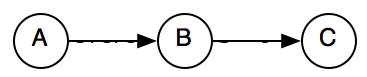
But this is not possible anymore after normalization because is_included will be replaced by includes and hence the arrow between B and C has changed direction. As a result, the composition will have to account for all possible combinations of arrows in an dout of node B:
(in-out) 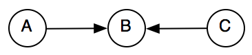 (in-in) 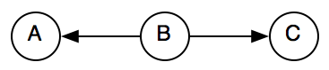 (out-out) 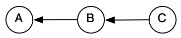 (out-in)
The table for the first case (in-out) is a subset of the existing composition table and the tables for the other cases can simply be derived from the original table. I have not yet verified that closure after normalization is semantically equivalent to closure with normalization (but would be surprised if it isn't).
One question is whether this split of the composition table is necessary. Now we check constraints going in both directions:
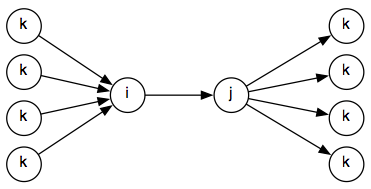 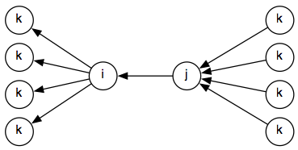
So the propagate() method on the graph needs to check 2* 4*4 = 16 possibilities, whereas it will be 16 for a normalized graph:
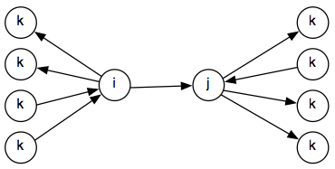
But couldn't we just use one of the two non-normalized graphs above? We will not have real normalization, but if we can build a directed non-cyclic graph perhaps it is not needed to have four composition tables. This may need to be explored, but it doesn't sound right.
The idea here is to use something like Allen's approach to this. The normalization outlined above is a first necessary step, but needs to be amended by selectively removing some links that can be derived by closure. Currently, event after normalization, we can have a graph like below.
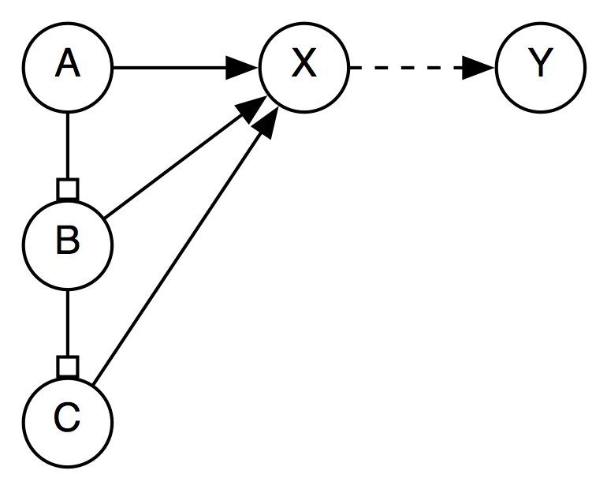
When R(X,Y) is added, all three nodes with edges leading to X need to be considered. But if Edge(B,X) and Edge(C,X) are removed, and A is considered a reference interval for B and C, then only one edge leading into X needs to be considered:
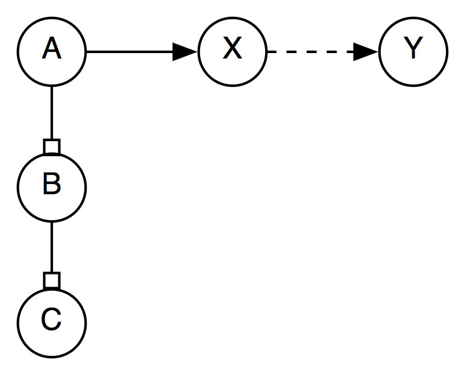This needs to be seriously investigated.